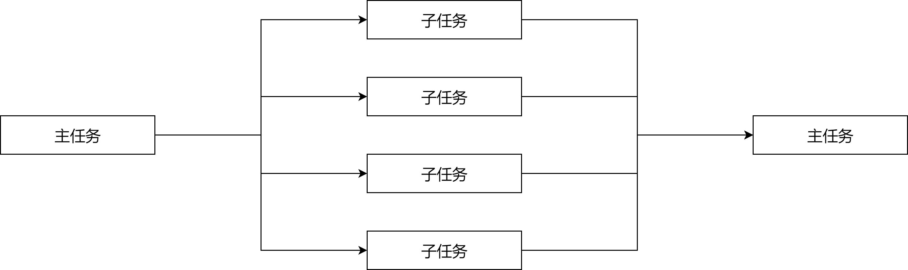
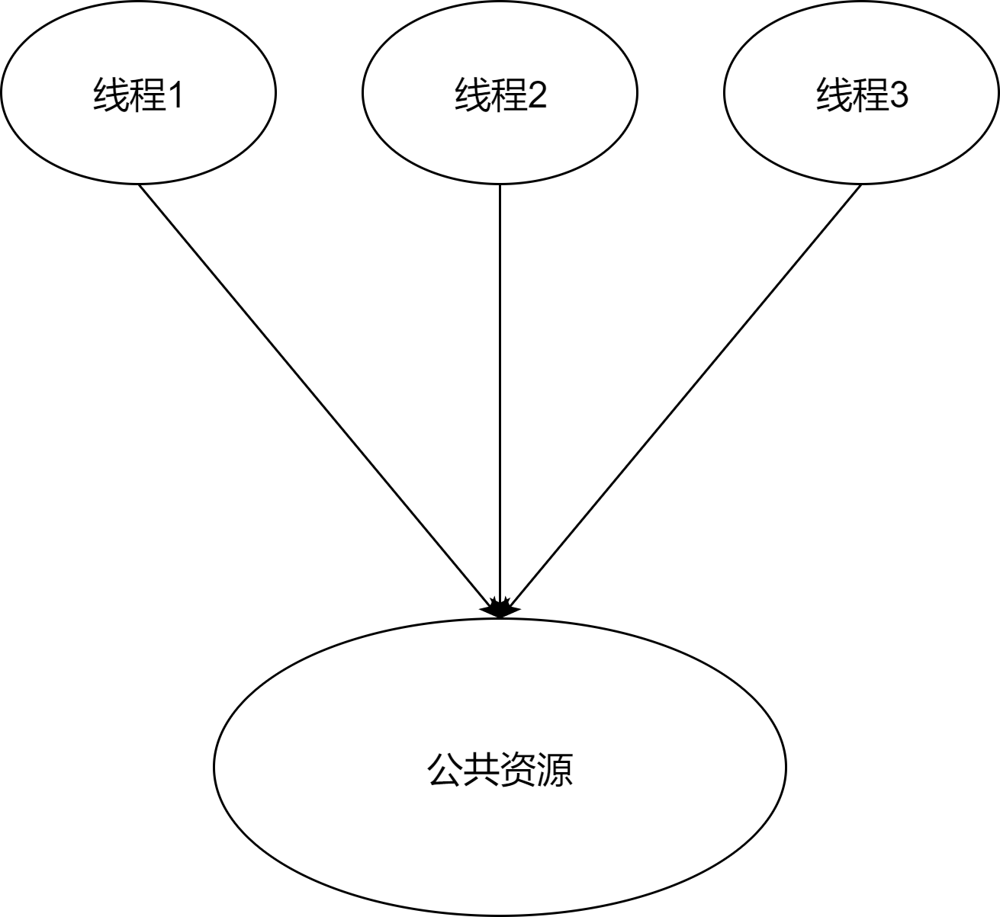
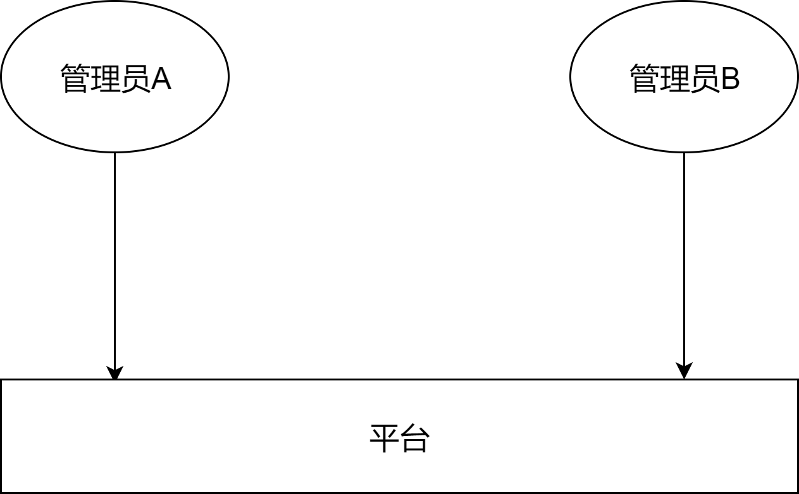
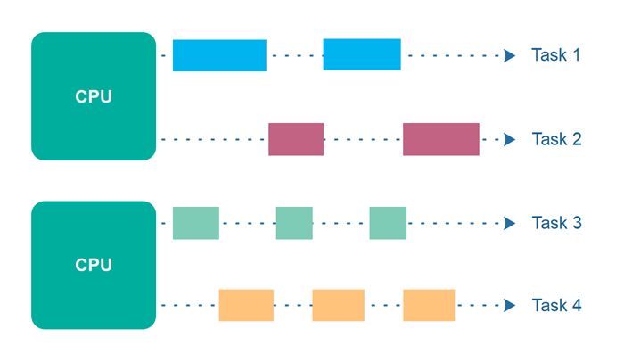

在学习多线程的时候，总是会提到同步、异步、并发、并行等术语，这些术语对于初学者来说晦涩难懂，而且网上的其它文章对此解释的含糊不清；还有就是好多复制粘贴的文章，甚至这些文章连错别字都一样。
同步
同步的英文是：Synchronization，根据维基百科中对 Synchronization 的解释：同步是指两种不同但相关概念的其中一个：进程同步和数据同步。
在生产者－消费者关系中，消费者会一直等待生产者的数据。
分叉和联接：当主任务想快速处理某些数据时，可以分成 N 个子任务；而主任务又会等待所有子任务处理完成，然后主任务再进行其它业务逻辑处理。

独家资源使用或者说是排他资源使用：当有多个线程需要访问同一个资源时，其他线程只能等待。
上面说的这三种是同步的主要需求，下面详细说一下线程或进程同步。
线程或进程同步
对于同步来说，我个人认为线程同步和进程同步是一样的。出现这两种说法应该是历史原因，因为操作系统之前的最小调度单位是进程，而随着发展现在变成了线程。所以我觉得只需要知道线程同步就可以了。
假设有三个线程，即1、2 和 3。这三个线程正在同时执行，并且它们需要访问同一个公共资源，如下图：

为了防止访问共享资源时产生冲突。因此，当线程 1 和 2 都尝试访问该资源时，必须同一时间只有一个线程能访问。
如果将其分配给线程 1，则线程 2 需要等待，直到线程 1 释放该资源。
其实可以简单的认为：在多线程环境下，同一时间只有一个线程能访问资源(其它线程会等待)，就可以认为是同步。
在 Java 中要想实现这种情况，可以使用
synchronized关键字。
异步
在维基百科中也有对 Asynchrony (computer programming) 的解释，通俗的讲就是：当发生了一个事件的时候，这个事件的处理方式和程序的流程是没有关系的，也就是说程序不会一直等待这个事件处理完。
例如，当管理员 A 查询所有用户的时候，管理员 B 同时又能对某个用户信息做修改，而不是要等到管理员 A 操作结束后才能修改用户信息。

还有就是在同步中提到的子任务、线程，这些都是异步。
其实可以简单的认为：只要某一个事件在另一个线程中执行，这就是异步。
并发
假设计算机只有一个 CPU，则应用程序可能无法完全同时完成多个任务，但是在应用程序中一次可能要完成多项任务。为了同时完成多个任务，CPU 在执行期间会在不同任务之间进行切换。
类似下面这张图一会执行 Task1 一会执行 Task2，但是并不会一起执行。

可能你看到这张图的时候会惊呼：这不就是多线程的执行方式吗？
是的，这就是多线程的执行方式；注意，这里说的是执行方式。多线程并不等于 CPU，多线程指的是同一个程序中有多个执行的线程，这些线程由不同的 CPU 内核处理。
另外值得注意的是：这里不考虑 CPU 超线程技术，所以上图中的两个任务永远不会同一时间开始执行，Task1 或 Task2 必定有一个先执行。
通过上面说的这些，我们可以得出三个重点：
- 单核 CPU
- 两个(多个)任务永远不会同一时间开始执行
- 同时完成多个任务
也可以简化为：多个任务交替执行，但是这些任务并不是同时开始执行并且大概在相同时间内完成。

这里的 CPU 你可以认为是多核 CPU 中某个核心的一个线程或者就是一个单核的 CPU。这里说 “某个核心的一个线程”，是因为 超线程 技术；如果这里只是说某个 CPU 核心，则该核心使用了超线程技术，就有可能会导致两个任务同时开始。
可以简单的理解超线程技术：使某个物理内核实现并行计算。超线程技术我也不是很理解，就知道能并行计算。
并行执行
先说一下，并发和并行是不一样的。
并行执行是指，计算机有多个 CPU 或一个 CPU 有多个核心，同时执行多个任务。但是，并行执行不等于并行性。
并行执行如下图所示：

并行并发执行
根据 CPU 上分布的不同任务，得出的结论就是：在同一 CPU 上执行的任务是并发执行的，而在不同 CPU 上执行的线程是并行执行的。

并行性
假设现在有一个比较复杂的任务，我们把这个复杂的任务拆分成 4 个子任务，然后将这 4 个子任务分别由 4 个不同的线程执行，并且这些线程分别运行在 2 个不同的 CPU 上。
这意味着，这些子任务的一部分是并发执行的(在同一 CPU 上执行的)，而另一部分是并行执行的(在不同 CPU 上执行的)。

如果这4个子任务是由在各自的CPU上运行的4个线程执行的(总共4个CPU)，那么任务执行应该是完全并行的。
然而，将一个任务分解为与可用cpu数量完全相同的子任务并不总是容易的
通常，更容易的做法是将一个任务分解为一些自然适合手头任务的子任务，然后让线程调度程序负责将线程分配到可用的cpu中。
并行性和并行并发执行看起来很相似，但是术语并行性是指应用程序将某个任务分解为较小的子任务，这些子任务可以并行处理。
我个人认为，并行性是在应用程序中的说法，并发和并行是在 CPU 中的说法。
参考资料
Synchronization (computer science)